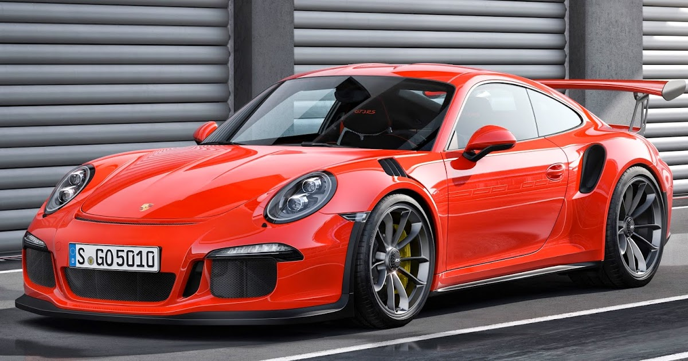

|
|||||||
| Porsche 911 991 GT3 RS |
|||||||
|---|---|---|---|---|---|---|---|
|  | |||||||
O 911 GT3 RS é uma obra-prima de design inteligente e leve. Pela primeira vez, o telhado é feito de magnésio; fibra de carbono é usada nas tampas do motor e do porta-malas, e outros componentes leves são feitos de materiais alternativos. Além disso, o tejadilho leve baixa o centro de gravidade do automóvel desportivo, o que melhora a sua excelente dinâmica lateral. A carroceria vem do 911 Turbo e significa seu status quase como uma máquina de dirigir um carro de corrida com suas peças aerodinâmicas específicas do RS. O spoiler dianteiro, que se estende quase até à estrada, e a grande asa traseira reforçam o seu visual dominante. Outra característica são as saídas de ar exclusivas nas cavas das rodas dianteiras que se estendem até a seção superior das asas assim como nos carros de automobilismo puro-sangue. Eles aumentam a força descendente no eixo dianteiro. Com um tempo de volta de 7 minutos e 20 segundos, o 911 GT3 RS bate até mesmo o valor recorde histórico do superesportivo Carrera GT de pouco menos de 7 minutos e 29 segundos no North Loop de Nürburgring.
|
|||||||